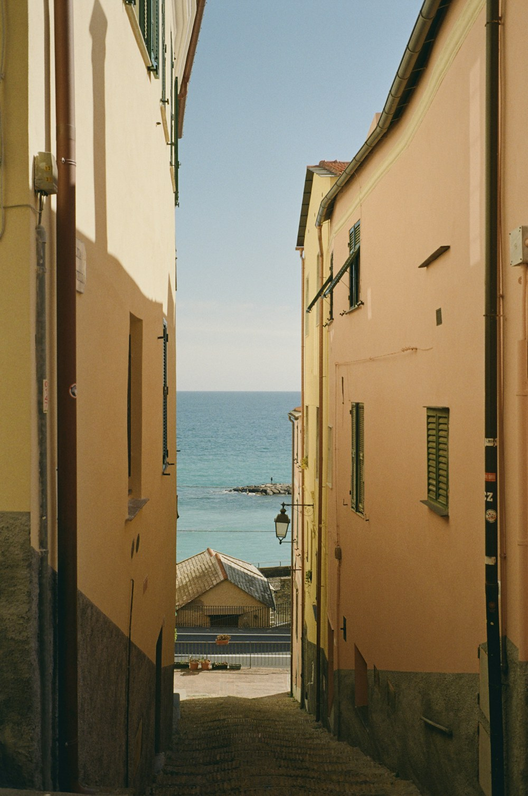
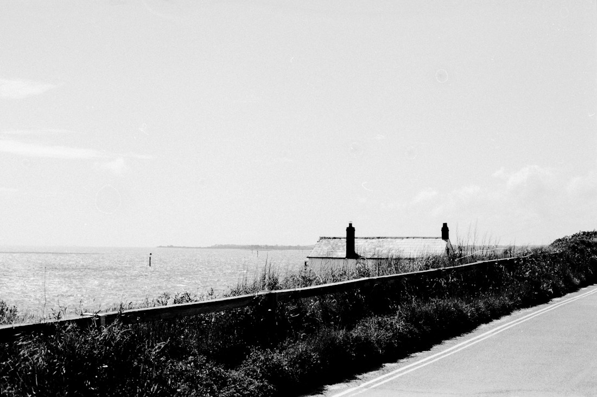

SIX MOMENTS
The six photographs in the site.
These are the sample photographs in the workspace. They come from Unsplash under the Unsplash License, and each one is credited here to the person who took it. Using someone else's work means naming them.
Photographs06


About your own photographs
A photograph you import in the workspace is never uploaded anywhere. Processing and export happen in the browser, and closing the tab leaves nothing behind.